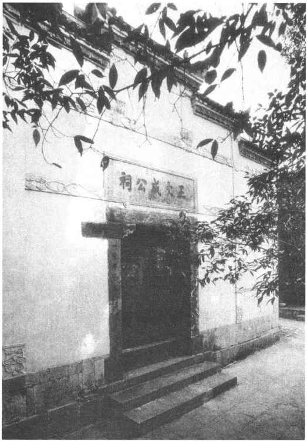

明朝前期在封建统治者的大力提倡下，朱熹的理学思想占据统治地位。在明成祖朱棣授意下，由胡广等编纂成《四书大全》、《五经大全》和《性理大全》三部理学大典，宣扬程朱理学思想，成为读书人必读的规范教材。在科举考试中，也要以程朱理学思想作为答题的准则。时间长了不免产生负面影响，大家说一样的话，做一样的文章，学术思想停滞不前，学术空气愈加沉闷。这种局面引发了越来越多的读书人的不满，终于促成明朝中后期阳明学派的崛起。
阳明学派的创立人是明朝中叶的王守仁（1472—1528）。他是余姚（今属浙江）人，因曾在家乡阳明洞讲学，人称阳明先生。他以反传统的姿态出现，敢于批判朱熹，形成阳明学派，对明朝中后期的儒学思想产生较大影响。实际上，王守仁是以陆九渊的心学来批判朱熹的客观唯心主义理学思想。针对朱熹的客观唯心主义观点，他提出：“心外无物，心外无事，心外无理，心外无义，心外无善。”［31］王守仁认为，封建的道德伦理观念就是人们心中所固有的“理”，这就是所谓的“良知”。人们必须“致良知”，也就是要启发自己心中的理性，才能达到高尚的思想境界。这就要求人们必须去“格物”，即去掉私欲、改正自己不正当的思念。王守仁所说的格物，并不是要人们去考察客观的事物，而是用反求内心的修养方法去苦思冥想，以此启发内心对世界的认识。他试图通过强调人的主观精神作用来刺激封建学术的沉闷局面，以此挽救封建统治的危机。王守仁的思想观点继承和发展了宋朝陆九渊的“心学”，所以思想史上有“陆王学派”之称。（图9—19）

图9-19 贵州龙冈书院的王文成公祠
王守仁仕途坎坷，因反对宦官刘瑾专权，曾被贬官为贵州龙场驿丞，以后又升至南京兵部尚书。政治的失意，更促进了他的哲学思考。他还镇压过农民的武装起义，因此他敏锐地指出：“破山中贼易，破心中贼难。”［32］这反映出像王阳明这样的知识分子已经观点到，封建制度已经面临深刻的危机，镇压局部的人民武装反抗相对来说还比较容易，而消灭人民心中的反封建思想才是最难的。这样的思想观点是超前的，也说明封建社会已开始进入没落阶段。
理学自宋代兴起以后，在封建意识形态领域中一直占据着统治地位。统治者把封建礼教所宣扬的三纲五常视为人们一切思想言行的准则。在元、明、清三朝的科举考试中，都明确规定必须以朱熹的《四书章句集注》作为回答问题的准则。读书人只能用死板的八股文来重复那些迂腐的说教。所谓“代圣贤立言”就是不准人们有自己的独立思考。这时期，封建制度已经出现根本性危机，摧垮封建纲常伦理思想的民主意识开始萌生，封建社会已进入了最后的垂死阶段，统治阶级正在拼命地利用一切手段维护自己的统治。在意识形态方面，封建统治者更是大肆宣扬封建的伦理道德，利用理学的“纲常”说教禁锢人们的思想；极力鼓吹腐朽的忠孝节义来愚昧人民，并以此压制、摧残已经萌发出来的进步的民主思想。因此，宋明理学在明、清时代，已经成为僵化、落后的教条了，完全是统治者扼杀人才的精神武器了。空谈道德性命的理学，对社会毫无补益。对于读书人来说，它不过是猎取功名利禄的敲门砖罢了。在封建社会走向崩溃的进程中，理学在政治上的反动作用越来越突出，在学术上它也无所建树了。